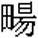
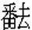

迎神赛会这一天出巡的神，如果是掌握生杀之权的，——不，这生杀之权四个字不大妥，凡是神，在中国仿佛都有些随意杀人的权柄似的，倒不如说是职掌人民的生死大事的罢，就如城隍和东岳大帝[98]之类，那么，他的卤簿[99]中间就另有一群特别的脚色：鬼卒，鬼王，还有活无常。
这些鬼物们，大概都是由粗人和乡下人扮演的。鬼卒和鬼王是红红绿绿的衣裳，赤着脚；蓝脸，上面又画些鱼鳞，也许是龙鳞或别的什么鳞罢，我不大清楚。鬼卒拿着钢叉，叉环振得琅琅地响，鬼王拿的是一块小小的虎头牌。据传说，鬼王是只用一只脚走路的；但他究竟是乡下人，虽然脸上已经画上些鱼鳞或者别的什么鳞，却仍然只得用了两只脚走路。所以看客对于他们不很敬畏，也不大留心，除了念佛老妪和她的孙子们为面面圆到起见，也照例给他们一个“不胜屏营待命之至”[100]的仪节。
至于我们——我相信：我和许多人——所最愿意看的，却在活无常。他不但活泼而诙谐，单是那浑身雪白这一点，在红红绿绿中就有“鹤立鸡群”之概。只要望见一顶白纸的高帽子和他手里的破芭蕉扇的影子，大家就都有些紧张，而且高兴起来了。
人民之于鬼物，惟独与他最为稔熟，也最为亲密，平时也常常可以遇见他。譬如城隍庙或东岳庙中，大殿后面就有一间暗室，叫作“阴司间”，在才可辨色的昏暗中，塑着各种鬼：吊死鬼，跌死鬼，虎伤鬼，科场鬼，……而一进门口所看见的长而白的东西就是他。我虽然也曾瞻仰过一回这“阴司间”，但那时胆子小，没有看明白。听说他一手还拿着铁索，因为他是勾摄生魂的使者。相传樊江[101]东岳庙的“阴司间”的构造，本来是极其特别的：门口是一块活板，人一进门，踏着活板的这一端，塑在那一端的他便扑过来，铁索正套在你脖子上。后来吓死了一个人，钉实了，所以在我幼小的时候，这就已不能动。
倘使要看个分明，那么，《玉历钞传》上就画着他的像，不过《玉历钞传》也有繁简不同的本子的，倘是繁本，就一定有。身上穿的是斩衰凶服[102]，腰间束的是草绳，脚穿草鞋，项挂纸锭[103]；手上是破芭蕉扇，铁索，算盘；肩膀是耸起的，头发却披下来；眉眼的外梢都向下，像一个“八”字。头上一顶长方帽，下大顶小，按比例一算，该有二尺来高罢；在正面，就是遗老遗少们所戴瓜皮小帽的缀一粒珠子或一块宝石的地方，直写着四个字道：“一见有喜”。有一种本子上，却写的是“你也来了”。这四个字，是有时也见于包公殿[104]的扁额上的，至于他的帽上是何人所写，他自己还是阎罗王[105]，我可没有研究出。
《玉历钞传》上还有一种和活无常相对的鬼物，装束也相仿，叫作“死有分”。这在迎神时候也有的，但名称却讹作死无常了，黑脸，黑衣，谁也不爱看。在“阴司间”里也有的，胸口靠着墙壁，阴森森地站着；那才真真是“碰壁”[106]。凡有进去烧香的人们，必须摩一摩他的脊梁，据说可以摆脱了晦气；我小时也曾摩过这脊梁来，然而晦气似乎终于没有脱，——也许那时不摩，现在的晦气还要重罢，这一节也还是没有研究出。
我也没有研究过小乘佛教[107]的经典，但据耳食之谈，则在印度的佛经里，焰摩天[108]是有的，牛首阿旁也有的，都在地狱里做主任。至于勾摄生魂的使者的这无常先生，却似乎于古无征，耳所习闻的只有什么“人生无常”之类的话。大概这意思传到中国之后，人们便将他具象化了。这实在是我们中国人的创作。
然而人们一见他，为什么就都有些紧张，而且高兴起来呢？
凡有一处地方，如果出了文士学者或名流，他将笔头一扭，就很容易变成“模范县”[109]。我的故乡，在汉末虽曾经虞仲翔[110]先生揄扬过，但是那究竟太早了，后来到底免不了产生所谓“绍兴师爷”[111]，不过也并非男女老小全是“绍兴师爷”，别的“下等人”也不少。这些“下等人”，要他们发什么“我们现在走的是一条狭窄险阻的小路，左面是一个广漠无际的泥潭，右面也是一片广漠无际的浮砂，前面是遥遥茫茫荫在薄雾的里面的目的地”[112]那样热昏似的妙语，是办不到的，可是在无意中，看得往这“荫在薄雾的里面的目的地”的道路很明白：求婚，结婚，养孩子，死亡。但这自然是专就我的故乡而言，若是“模范县”里的人民，那当然又作别论。他们——敝同乡“下等人”——的许多，活着，苦着，被流言，被反噬，因了积久的经验，知道阳间维持“公理”的只有一个会[113]，而且这会的本身就是“遥遥茫茫”，于是乎势不得不发生对于阴间的神往。人是大抵自以为衔些冤抑的；活的“正人君子”们只能骗鸟，若问愚民，他就可以不假思索地回答你：公正的裁判是在阴间！
想到生的乐趣，生固然可以留恋；但想到生的苦趣，无常也不一定是恶客。无论贵贱，无论贫富，其时都是“一双空手见阎王”[114]，有冤的得伸，有罪的就得罚。然而虽说是“下等人”，也何尝没有反省？自己做了一世人，又怎么样呢？未曾“跳到半天空”么？没有“放冷箭”[115]么？无常的手里就拿着大算盘，你摆尽臭架子也无益。对付别人要滴水不羼的公理，对自己总还不如虽在阴司里也还能够寻到一点私情。然而那又究竟是阴间，阎罗天子，牛首阿旁，还有中国人自己想出来的马面[116]，都是并不兼差，真正主持公理的脚色，虽然他们并没有在报上发表过什么大文章。当还未做鬼之前，有时先不欺心的人们，遥想着将来，就又不能不想在整块的公理中，来寻一点情面的末屑，这时候，我们的活无常先生便见得可亲爱了，利中取大，害中取小，我们的古哲墨翟[117]先生谓之“小取”云。
在庙里泥塑的，在书上墨印的模样上，是看不出他那可爱来的。最好是去看戏。但看普通的戏也不行，必须看“大戏”或者“目连戏”[118]。目连戏的热闹，张岱[119]在《陶庵梦忆》上也曾夸张过，说是要连演两三天。在我幼小时候可已经不然了，也如大戏一样，始于黄昏，到次日的天明便完结。这都是敬神禳灾的演剧，全本里一定有一个恶人，次日的将近天明便是这恶人的收场的时候，“恶贯满盈”，阎王出票来勾摄了，于是乎这活的活无常便在戏台上出现。
我还记得自己坐在这一种戏台下的船上的情形，看客的心情和普通是两样的。平常愈夜深愈懒散，这时却愈起劲。他所戴的纸糊的高帽子，本来是挂在台角上的，这时预先拿进去了；一种特别乐器，也准备使劲地吹。这乐器好像喇叭，细而长，可有七八尺，大约是鬼物所爱听的罢，和鬼无关的时候就不用；吹起来，Nhatu，nhatu，nhatututuu地响，所以我们叫它“目连嗐头”[120]。
在许多人期待着恶人的没落的凝望中，他出来了，服饰比画上还简单，不拿铁索，也不带算盘，就是雪白的一条莽汉，粉面朱唇，眉黑如漆，蹙着，不知道是在笑还是在哭。但他一出台就须打一百零八个嚏，同时也放一百零八个屁，这才自述他的履历。可惜我记不清楚了，其中有一段大概是这样：
“…………
大王出了牌票，叫我去拿隔壁的癞子。
问了起来呢，原来是我堂房的阿侄。
生的是什么病？伤寒，还带痢疾。
看的是什么郎中？下方桥的陈念义[121]la儿子。
开的是怎样的药方？附子，肉桂，外加牛膝。
第一煎吃下去，冷汗发出；
第二煎吃下去，两脚笔直。
我道nga阿嫂哭得悲伤，暂放他还阳半刻。
大王道我是得钱买放，就将我捆打四十！”
这叙述里的“子”字都读作入声。陈念义是越中的名医，俞仲华曾将他写入《荡寇志》[122]里，拟为神仙；可是一到他的令郎，似乎便不大高明了。la者“的”也；“儿”读若“倪”，倒是古音罢；nga者，“我的”或“我们的”之意也。
他口里的阎罗天子仿佛也不大高明，竟会误解他的人格，——不，鬼格。但连“还阳半刻”都知道，究竟还不失其“聪明正直之谓神”[123]。不过这惩罚，却给了我们的活无常以不可磨灭的冤苦的印象，一提起，就使他更加蹙紧双眉，捏定破芭蕉扇，脸向着地，鸭子浮水似的跳舞起来。
Nhatu，nhatu，nhatu-nhatu-nhatututuu！目连嗐头也冤苦不堪似的吹着。
他因此决定了：
“难是弗放者个！
那怕你，铜墙铁壁！
那怕你，皇亲国戚！
…………”
“难”者，“今”也；“者个”者，“的了”之意，词之决也。“虽有忮心，不怨飘瓦”[124]，他现在毫不留情了，然而这是受了阎罗老子的督责之故，不得已也。一切鬼众中，就是他有点人情；我们不变鬼则已，如果要变鬼，自然就只有他可以比较的相亲近。
我至今还确凿记得，在故乡时候，和“下等人”一同，常常这样高兴地正视过这鬼而人，理而情，可怖而可爱的无常；而且欣赏他脸上的哭或笑，口头的硬语与谐谈……。
迎神时候的无常，可和演剧上的又有些不同了。他只有动作，没有言语，跟定了一个捧着一盘饭菜的小丑似的脚色走，他要去吃；他却不给他。另外还加添了两名脚色，就是“正人君子”[125]之所谓“老婆儿女”[126]。凡“下等人”，都有一种通病：常喜欢以己之所欲，施之于人。虽是对于鬼，也不肯给他孤寂，凡有鬼神，大概总要给他们一对一对地配起来。无常也不在例外。所以，一个是漂亮的女人，只是很有些村妇样，大家都称她无常嫂；这样看来，无常是和我们平辈的，无怪他不摆教授先生的架子。一个是小孩子，小高帽，小白衣；虽然小，两肩却已经耸起了，眉目的外梢也向下。这分明是无常少爷了，大家却叫他阿领[127]，对于他似乎都不很表敬意；猜起来，仿佛是无常嫂的前夫之子似的。但不知何以相貌又和无常有这么像？吁！鬼神之事，难言之矣，只得姑且置之弗论。至于无常何以没有亲儿女，到今年可很容易解释了：鬼神能前知，他怕儿女一多，爱说闲话的就要旁敲侧击地锻成他拿卢布，所以不但研究，还早已实行了“节育”了。
这捧着饭菜的一幕，就是“送无常”。因为他是勾魂使者，所以民间凡有一个人死掉之后，就得用酒饭恭送他。至于不给他吃，那是赛会时候的开玩笑，实际上并不然。但是，和无常开玩笑，是大家都有此意的，因为他爽直，爱发议论，有人情，——要寻真实的朋友，倒还是他妥当。
有人说，他是生人走阴，就是原是人，梦中却入冥去当差的，所以很有些人情。我还记得住在离我家不远的小屋子里的一个男人，便自称是“走无常”，门外常常燃着香烛。但我看他脸上的鬼气反而多。莫非入冥做了鬼，倒会增加人气的么？吁！鬼神之事，难言之矣，这也只得姑且置之弗论了。
六月二十三日。
注 释
[97] 本篇最初发表于1926年7月10日《莽原》半月刊第一卷第十三期。
[98] 东岳大帝 道教所奉的泰山神。汉代的纬书《孝经援神契》中说：“泰山，天帝之孙也，主召人魂。”又《尔雅·释山》称“泰山为东岳”。旧时迷信传说泰山神掌管人的生死。元世祖至元二十八年（1291）尊为东岳天齐大生仁皇帝，简称东岳大帝。
[99] 卤簿 封建时代帝王或大臣外出时的侍从仪仗队。
[100] “不胜屏营待命之至” 旧时官府对上级呈文结束处的套语；这里用作肃立敬畏的意思。
[101] 樊江 绍兴县城东二十里的一个乡镇。
[102] 斩衰凶服 封建丧制中规定的重孝丧服，用粗麻布裁制，不缝下边。
[103] 纸锭 一种迷信用品，用纸或锡箔折成的元宝。旧俗认为焚化后可供死者在“阴间”使用。
[104] 包公殿 供奉宋代包拯（999—1062）的庙宇。旧时迷信传说，包拯死后做了阎罗十殿中第五殿的阎罗王，东岳庙或城隍庙中供有他的神像。
[105] 阎罗王 即下文的阎罗天子，小乘佛教所称的地狱主宰。《法苑珠林》卷十二中说：“阎罗王者，昔为毗沙国王，经与维陀如生王共战，兵力不敌，因立誓愿为地狱主。”
[106] “碰壁” 在女师大学生反对校长杨荫榆的事件中，有教员阻挠学生，说“你们做事不要碰壁”。作者这里用这个词含有讽刺的意思。参看《华盖集·“碰壁”之后》。
[107] 小乘佛教 早期佛教的主要流派，注重个人修行持戒，自我解脱，与后来自称普渡无量众生的大乘教派旨趣有别，自认为是佛教的正统派。
[108] 焰摩天 佛教传说“欲界诸天”中的一天。佛经中又有“焰摩界”，即所谓轮回六道中的饿鬼道，它的主宰者是琰魔王，也就是阎罗王。这里所说的“焰摩天”，当是地狱的“焰摩界”。
[109] “模范县” 这里是对陈西滢的讥讽。陈是无锡人，他在《现代评论》第二卷第三十七期（1925年8月22日）《闲话》中曾谈论过“无锡是中国的模范县”。
[110] 虞仲翔（164—233） 名翻，三国吴会稽余姚（今属浙江）人，经学家。他揄扬绍兴的话，见《三国志·吴书·虞翻传》注引虞预《会稽典录》：“夫会稽上应牵牛之宿，下当少阳之位，东渐巨海，西通五湖，南

无垠，北渚浙江。南山攸居，实为州镇，昔禹会群臣，因以命之。山有金木鸟兽之殷，水有鱼盐珠蚌之饶。海岳精液，善生俊异，是以忠臣继踵，孝子连闾，下及贤女，靡不育焉。”[111] “绍兴师爷” 清代官署中承办刑事判牍的幕僚叫“刑名师爷”。一般善于舞文弄法，往往能左右人的祸福；当时绍兴籍的幕僚较多，因有“绍兴师爷”之称。陈西滢在1926年1月30日《晨报副刊》上发表的《致志摩》信中曾讥讽鲁迅“有他们贵乡绍兴的刑名师爷的脾气”。
[112] 这几句话都出自陈西滢的《致志摩》。
[113] 指1925年12月陈西滢等为支持当局压迫北京女师大学生和教育界进步人士而组织的“教育界公理维持会”。参看《华盖集·“公理”的把戏》。
[114] “一双空手见阎王” 语出《何典》：“卖嘴郎中无好药，一双空手见阎王。”
[115] “放冷箭” 这也是陈西滢在《致志摩》中攻击鲁迅的话：“他没有一篇文章里不放几支冷箭。”
[116] 马面 迷信传说地狱中人身马头的狱卒。
[117] 墨翟 参看《故事新编·非攻》及其注〔4〕。所著《墨子》十五卷，其中有《大取》、《小取》两篇。《大取》篇中说：“利之中取大，害之中取小也。害之中取小也，非取害也，取利也。”
[118] “大戏”或者“目连戏” 都是绍兴的地方戏。清代范寅《越谚》卷中说：“班子：唱戏成

（班）者，有文班、武班之别。文专唱和，名高调班；武演战斗，名乱弹班。”又说：“万（按此处读‘木’）莲班：此专唱万莲一出戏者，百姓为之。”高调班和乱弹班就是大戏；万莲班就是目连戏。据《盂兰盆经》：目连是佛的大弟子，有大神通，尝入地狱救母。唐代已有《大目乾连冥间救母变文》，以后各种戏曲中多有目连戏。参看《且介亭杂文末编·女吊》第五段。[119] 张岱（1597—1689） 字宗子，号陶庵，浙江山阴（今绍兴）人，明末文学家。他在《陶庵梦忆·目连戏》中记载当时的演出情况说：“选徽州旌阳戏子，剽轻精悍，能相扑打者三四十人，搬演《目连》，凡三日三夜。”
[120] “目连嗐头” 嗐头，绍兴方言，即号筒。范寅《越谚》卷中说是“铜制，长四尺”。“目连嗐头”是一种特别加长的号筒。据《越谚》卷中说：“道场及召鬼戏皆用，万莲戏为多，故名。”
[121] 陈念义 清代嘉庆道光年间绍兴的名医，即叶腾骧《证谛山人杂志》卷五中所记的陈念二：“陈念二者，山阴方桥人，偶忘其名字，世业医，称为妙手，远近就医者不绝。”
[122] 俞仲华（1794—1849） 名万春，字仲华，浙江山阴（今绍兴）人。《荡寇志》，一名《结水浒传》，长篇小说，共七十回（又结子一回），写梁山泊头领全部被宋王朝剿灭。
[123] “聪明正直之谓神” 语出《左传》庄公三十二年：“神，聪明正直而壹者也。”
[124] “虽有忮心，不怨飘瓦” 语出《庄子·达生》：“虽有忮心者，不怨飘瓦。”用在这里的意思是说，心里虽有愤恨，却也不好怨谁了。
[125] “正人君子” 这里的“正人君子”和下文的“教授先生”，指当时现代评论派中的胡适、陈西滢等人。他们在1925年北京女子师范大学风潮中，站在北洋政府一边，攻击鲁迅和女师大进步师生，拥护北洋军阀的《大同晚报》在同年8月7日的一篇报导中称他们为“正人君子”。
[126] “老婆儿女” 陈西滢在《现代评论》第三卷第七十四期（1926年5月8日）的《闲话》中说：“家累日重，需要日多，才智之士，也没法可想，何况一般普通人。因此，依附军阀和依附洋人便成了许多人唯一的路径，就是有些志士，也常常未能免俗。……他们自己可以捱饿，老婆子女却不能不吃饭啊！就是那些直接或间接用苏俄金钱的人，也何尝不是如此。”
[127] 阿领 妇女再嫁时领（带）来的同前夫所生的孩子。